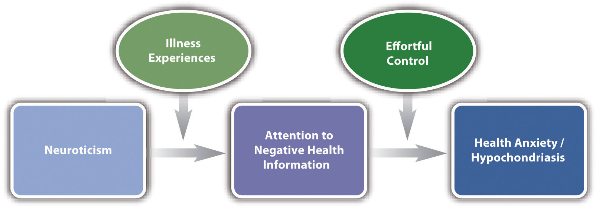

Researchers in psychology have found that many different types of theories can help them to organize phenomena, predict what will happen in new situations, and generate new research. It is important for beginning researchers to be aware of the different types so that they recognize theories when they see them in the research literature. (They are not always clearly labeled as “theories.”) It is also important for them to see that some types of theories are well within their ability to understand, use, and even construct. In this section, we look at the variety of psychological theories in terms of three important dimensions: formality, scope, and theoretical approach.
Psychological theories vary widely in their formalityThe extent to which the components of a theory are specified clearly and lead to precise predictions.—the extent to which the components of the theory and the relationships among them are specified clearly and in detail. At the informal end of this dimension are theories that consist of simple verbal descriptions of a few important components and relationships. The habituation theory of expressive-writing effects on health is relatively informal in this sense. So is the drive theory of social facilitation and inhibition. At the more precise, formal end of this dimension are theories that are expressed in terms of mathematical equations or computer programs.
People who are not familiar with scientific psychology are sometimes surprised to learn that psychological theories can take the form of mathematical equations and computer programs. The following formal theories are among the best known and most successful in the field.
Both informal and formal theories have their place in psychological research. Informal theories tend to be easier to create and to understand but less precise in their predictions, which can make them more difficult to test. They are especially appropriate, however, in the early stages of research when the phenomena of interest have not yet been described in detail. Formal theories tend to be more difficult to create and to understand—sometimes requiring a certain amount of mathematical or computer programming background—but they also tend to be more precise in their predictions and therefore easier to test. They are especially appropriate in the later stages of research when the phenomena of interest have been described in detail
Theories in psychology also vary widely in their scopeThe number and variety of phenomena explained or interpreted by a theory.—the number and diversity of the phenomena they explain or interpret. Many early psychological theories were extremely broad in that they attempted to interpret essentially all human behavior. Freud and his followers, for example, applied his theory not only to understanding psychological disorders but also to slips of the tongue and other everyday errors, dreaming, sexuality, art, politics, and even civilization itself (Fine, 1979).Fine, R. (1979). A history of psychoanalysis. New York, NY: Columbia University Press. Such theories have fallen out of favor in scientific psychology, however, because they tend to be imprecise and difficult to test. In addition, they have not been particularly successful at organizing or predicting the range and complexity of human behavior at the level of detail that scientific researchers usually seek.
Still, contemporary theories in psychology can vary in their scope. At the broad end of this dimension are theories that apply to many diverse phenomena. Cognitive dissonance theory, for example, assumes that when people hold inconsistent beliefs, this creates mental discomfort that they are motivated to reduce by changing one or both of the beliefs. This theory has been applied to a wide variety of phenomena, including the persistence of irrational beliefs and behaviors (e.g., smoking), the effectiveness of certain persuasion and sales techniques (e.g., asking for a small favor before asking for a big one), and even placebo effects. At the narrow end of this dimension are theories that apply to a small number of closely related phenomena. Consider, for example, a very specific quantitative ability called subitizing. This refers to people’s ability to quickly and accurately perceive the number of objects in a scene without counting them—as long as the number is four or fewer. Several theories have been proposed to explain subitizing. Among them is the idea that small numbers of objects are associated with easily recognizable patterns. For example, people know immediately that there are three objects in a scene because the three objects tend to form a “triangle” and it is this pattern that is quickly perceived (Logan & Sbrodoff, 2003).Logan, G. D., & Sbrodoff, N. J. (2003). Subitizing and similarity: Toward a pattern-matching theory of enumeration. Psychonomic Bulletin & Review, 10, 676–682.
As with informal and formal theories, both broad and narrow theories have their place in psychological research. Broad theories organize more phenomena but tend to be less formal and less precise in their predictions. Narrow theories organize fewer phenomena but tend to be more formal and more precise in their predictions.
In addition to varying in formality and scope, theories in psychology vary widely in the kinds of theoretical ideas they are constructed from. We will refer to this as the theoretical approachThe kinds of theoretical ideas that a theory is constructed from..
Functional theoriesA theory that explains phenomena in terms of their function or purpose. explain psychological phenomena in terms of their function or purpose. For example, one prominent theory of repeated self-injury (e.g., cutting) is that people do it because it produces a short-term reduction in the intensity of negative emotions that they are feeling (Tantam & Huband, 2009).Tantam, D., & Huband, N. (2009). Understanding repeated self-injury: A multidisciplinary approach. New York, NY: Palgrave Macmillan. Note that this theory does not focus on how this happens, but on the function of self-injury for the people who engage in it. Theories from the perspective of evolutionary psychology also tend to be functional—assuming that human behavior has evolved to solve specific adaptive problems faced by our distant ancestors. Consider the phenomenon of sex differences in human mating strategies (Buss & Schmitt, 1993).Buss, D. M., & Schmitt, D. P. (1993). Sexual strategies theory: A contextual evolutionary analysis of human mating. Psychological Review, 100, 204–232. Men are somewhat more likely than women to seek short-term partners and to value physical attractiveness over material resources in a mate. Women are somewhat more likely than men to seek long-term partners and to value material resources over physical attractiveness in a mate. But why? The standard evolutionary theory holds that because the male investment in becoming a parent is relatively small, men reproduce more successfully by seeking several short-term partners who are young and healthy (which is signaled by physical attractiveness). But because the female investment in becoming a parent is quite large, women reproduce more successfully by seeking a long-term partner who has resources to contribute to raising the child.
Mechanistic theoriesA theory that explains phenomena in terms of underlying variables, structures, and processes, and the interactions among them., on the other hand, focus on specific variables, structures, and processes, and how they interact to produce the phenomena. The drive theory of social facilitation and inhibition and the multistore model of human memory are mechanistic theories in this sense. Figure 4.4 "Simplified Representation of One Contemporary Theory of Hypochondriasis" represents another example—a contemporary cognitive theory of hypochondriasis—an extreme form of health anxiety in which people misinterpret ordinary bodily symptoms (e.g., headaches) as signs of a serious illness (e.g., a brain tumor; Williams, 2004).Williams, P. G. (2004). The psychopathology of self-assessed health: A cognitive approach to health anxiety and hypochondriasis. Cognitive Therapy and Research, 28, 629–644. This theory specifies several key variables and the relationships among them. Specifically, people who are high in the personality trait of neuroticism (also called negative emotionality) start to pay excessive attention to negative health information—especially if they have had a significant illness experience as a child (e.g., a seriously ill parent). This attention to negative health information then leads to health anxiety and hypochondriasis, especially among people who are low in effortful control, which is the ability to shift attention away from negative thoughts and feelings.
Figure 4.4 Simplified Representation of One Contemporary Theory of Hypochondriasis
This theory focuses on key variables and the relationships among them.
Mechanistic theories can also be expressed in terms of biological structures and processes. With advances in genetics and neuroscience, such theories are becoming increasingly common in psychology. For example, researchers are currently constructing and testing theories that specify the brain structures associated with the storage and rehearsal of information in the short-term store, the transfer of information to the long-term store, and so on. Theories of psychological disorders are also increasingly likely to focus on biological mechanisms. Schizophrenia, for example, has been explained in terms of several biological theories, including theories that focus on genetics, neurotransmitters, brain structures, and even prenatal exposure to infections.
Finally, there are also theoretical approaches that provide organization without necessarily providing a functional or mechanistic explanation. These include stage theoriesA theory that specifies a series of stages that people pass through as they develop or adapt to their environment., which specify a series of stages that people pass through as they develop or adapt to their environment. Famous stage theories include Abraham Maslow’s hierarchy of needs and Jean Piaget’s theory of cognitive development. TypologiesA theory that categorizes people or behavior into distinct types. provide organization by categorizing people or behavior into distinct types. These include theories that identify several basic emotions (e.g., happiness, sadness, fear, surprise, anger, and disgust), several distinct types of intelligence (e.g., spatial, linguistic, mathematical, kinesthetic, musical, interpersonal, and intrapersonal), and distinct types of personalities (e.g., Type A vs. Type B).
Researchers in psychology have found that there is a place for all these theoretical approaches. In fact, multiple approaches are probably necessary to provide a complete understanding of any set of phenomena. A complete understanding of emotions, for example, is likely to require identifying the basic emotions that people experience, explaining why we have those emotions, and describing how those emotions work in terms of underlying psychological and biological variables, structures, and processes.